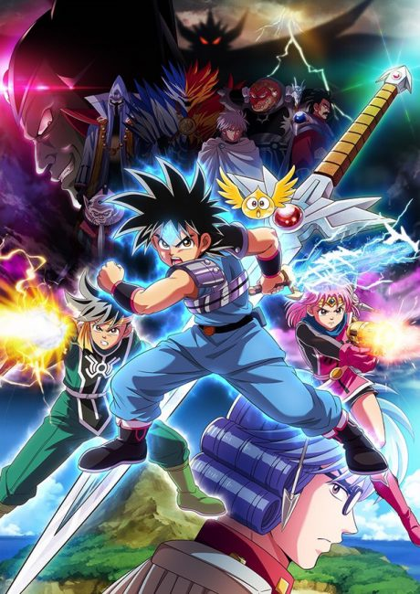
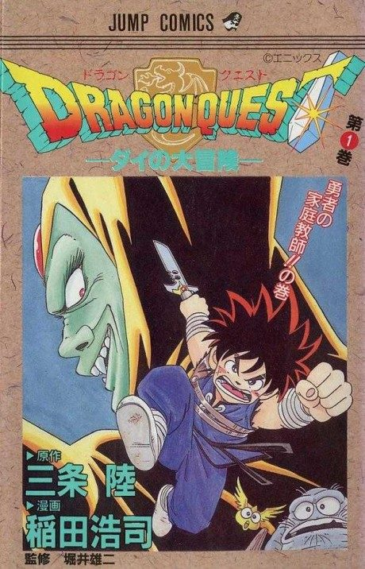

MangaDone Anime
MangaDragon Quest: The Adventure of Dai
ドラゴンクエスト ダイの大冒険
AniList7.3
Animeter—
Episodes100 ep
MangaDone
Anime finished. Where does the manga pick up?
StatusFully adapted
The 100-episode 2020 series adapts the entire manga through the final battle with Vearn.